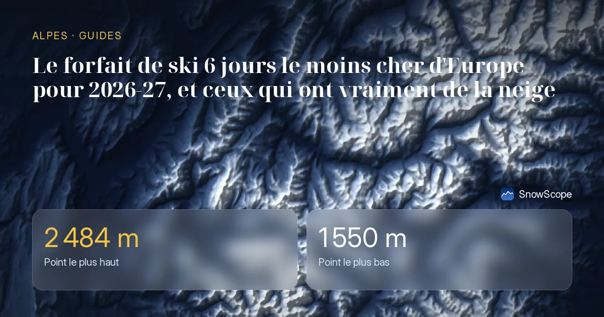

Le forfait de ski 6 jours le moins cher d'Europe pour 2026-27, et ceux qui ont vraiment de la neige
La semaine de ski la moins chère d'Europe cet hiver ne se trouve pas en Slovénie, même si la Slovénie affiche certains des prix les plus bas. Les Karellis, dans les Alpes françaises, propose un forfait adulte 6 jours à 191 EUR et, dans notre historique de neige sur 46 hivers passés, la station compte 19 semaines par hiver avec au moins 50 cm de neige dans 9 hivers sur 10. Les forfaits slovènes bon marché n'en comptent aucune.
Consultez les prévisions neige en temps réel pour Les Karellis sur l'application SnowScopeHauteurs de neige, alertes poudreuse et carte 3D, gratuitement.
Les dix forfaits 6 jours les moins chers que nous avons vérifiés
Nous avons repris les prix adulte 6 jours publiés par les stations pour l'hiver 2026-27 et les avons classés. Les Karellis arrive en tête à 191 EUR, puis Krvavec à 205 EUR, Rogla à partir de 210 EUR (jusqu'à 237 EUR aux dates les plus fréquentées), le Pass Horizon à Orcières Merlette à 227 EUR, qui donne aussi accès à la piscine et à la patinoire, et Vogel à 230 EUR.
Le deuxième groupe est très resserré : Galtür à 258 EUR en basse saison, Livigno à 258,5 EUR pendant sa promotion du 28 novembre au 18 décembre 2026, Les 2 Alpes à 266,5 EUR, Kühtai à 269 EUR en basse saison et Valloire-Valmeinier à 278,5 EUR. L'écart entre le premier et le dixième est plus faible qu'on ne l'imagine, c'est donc la neige qui doit trancher.
Le prix ne fait que la moitié du travail : la vérification neige
Un forfait pas cher n'est intéressant que s'il y a de la neige pour skier. Pour chaque station, nous avons regardé le mi-montagne dans notre historique de neige et compté les semaines d'un hiver normal où l'on trouve au moins 50 cm de neige dans 9 hivers sur 10. Nous les appelons les semaines enneigées fiables. Cinquante centimètres, c'est à peu près ce qu'il faut pour que la plupart des pistes ouvrent sans cailloux.
Les Karellis comptent 19 semaines enneigées fiables à 2017 m. Les 2 Alpes en comptent 20 à 2397 m, Valloire-Valmeinier 19, Galtür et Kühtai 18 chacune, Orcières Merlette 16 et Livigno 13. Krvavec, Rogla et Vogel en comptent 0 : leur mi-montagne se situe entre 1151 m et 1718 m et, en décembre habituel, on y trouve 6 à 10 cm de neige naturelle. Elles peuvent tout de même être agréables grâce à la neige de culture, mais on mise alors sur la météo.
Notre verdict pour une semaine de ski petit budget
Pour une semaine pas chère avec de bonnes chances de neige, Les Karellis sont le grand gagnant : le prix le plus bas et 65 cm de neige en décembre habituel au mi-montagne, 110 cm en janvier. C'est un petit domaine de 45 km de pistes, qui convient donc davantage aux familles et aux skieurs de niveau moyen qu'à ceux qui veulent changer de vallée chaque jour.
Pour plus de domaine pour un peu plus cher, Les 2 Alpes offrent 108 km de pistes et les remontées les plus hautes de la liste, jusqu'à 3511 m, pour 266,5 EUR. Kühtai est le choix autrichien : ses remontées démarrent à 1939 m, si bien que même le bas du domaine affiche en général 61 cm en décembre. Galtür est l'alternative tranquille de la vallée du Paznaun.
Quand partir pour payer le prix le plus bas
Plusieurs de ces tarifs sont des prix de basse saison. Galtür et Kühtai sont plus chères en haute saison, et les 258,5 EUR de Livigno ne sont valables que jusqu'au 18 décembre 2026. La semaine du 12 au 19 décembre est le bon créneau : les prix bas s'appliquent encore et les stations au-dessus de 2000 m ont généralement déjà leur enneigement de base.
En janvier, la neige est plus abondante presque partout dans cette liste. Si vos dates sont flexibles, une semaine de janvier hors vacances scolaires offre le meilleur compromis entre prix et neige, mais vérifiez bien quel tarif s'applique à vos dates avant de réserver.
Où dormir pour moins cher
Le forfait n'est qu'une partie de la facture. Les petites stations comme Les Karellis et Orcières Merlette comptent de nombreux appartements proches des remontées, ce qui rend la semaine abordable pour une famille. À Galtür et à Kühtai, les pensions sont souvent moins chères que les hôtels. La carte de cet article présente des hébergements à moins de 120 EUR la nuit pour la semaine du 12 au 19 décembre, à proximité des stations que nous recommandons.
Vérifiez toujours le site officiel de la station avant d'acheter : les prix peuvent évoluer en cours d'hiver et les tarifs les plus bas sont souvent réservés au site internet.
Conseils aux skieurs
- Meilleur rapport qualité-prix pour une semaine de ski : Les Karellis, 191 EUR pour 6 jours et 19 semaines enneigées fiables.
- Plus de domaine : Les 2 Alpes, 266,5 EUR pour 6 jours et des remontées jusqu'à 3511 m.
- Les forfaits slovènes sont bon marché mais en basse altitude : à prévoir seulement après une bonne chute de neige.
- Achetez sur le site officiel de la station et consultez le bulletin d'avalanche avant de sortir des pistes.
Autres cartes (sites externes)
Références et crédits
- Les Karellis, official prices 2026-2027 www.leskarellis.com/fr/tarifs-2026-2027-sans-lien
- Krvavec: official lift-pass prices (2026-27), checked 13 November 2026 rtc-krvavec.si/cenik-urnik
- Rogla: official lift-pass prices (2026-27), checked 13 November 2026 www.rogla.eu/sl/aktualna-ponudba/ceniki/zimske-aktivnosti/cenik-smucarskih-vozovnic-v-sezoni-20262027/
- Orcières, official ticketing, winter 2026-27 pass.orcieres.com/en/ticketing
- Vogel: official lift-pass prices (2026-27), checked 13 November 2026 vogel.si/cenik-zima/
- Galtür: official lift-pass prices (2026-27), checked 13 November 2026 www.galtuer.com/en/winter/operating-times-prices/skipass-prices-silvapark
- Livigno, official ski pass price list 2026-27 (PDF) www.livigno.eu/hubfs/tariffe_26-27.pdf
- Les 2 Alpes, official ski pass shop, prices 2026-27 www.skipass-2alpes.com/en/pricing
- Kühtai: official lift-pass prices (2026-27), checked 13 November 2026 www.kuehtai.info/service/service/preise-wintersaison-2026-2027.html
- Valloire, official ski pass shop (Galibier-Thabor), winter 2026-27 skipass.valloire.com/fr/
À propos de ces chiffres
Chiffres de neige : historique SnowScope, 46 hivers passés (1980-81 à 2025-26) à trois altitudes de la station (une estimation pour une zone, pas les bulletins de la station). Remontées, pistes et accès : les sources ci-dessous, vérifiées à la date indiquée.
Citer ce bulletin
Pour la recherche, l'enseignement ou la presse : chiffres et graphiques réutilisables librement sous CC BY 4.0 avec cette citation.
SnowScope (2026), Le forfait de ski 6 jours le moins cher d'Europe pour 2026-27, et ceux qui ont vraiment de la neige, https://snowscope.app/blog/fr/2026/11/cheapest-6-day-ski-pass-europe-2026-27-snow-check.html, consulté le 2026-11-19
SnowScope (Atlas Labs). (2026, November 19). Le forfait de ski 6 jours le moins cher d'Europe pour 2026-27, et ceux qui ont vraiment de la neige. SnowScope snow reports. https://snowscope.app/blog/fr/2026/11/cheapest-6-day-ski-pass-europe-2026-27-snow-check.html
BibTeX
@misc{snowscope2026cheapest6dayskipasseurop,
author = {{SnowScope (Atlas Labs)}},
title = {Le forfait de ski 6 jours le moins cher d'Europe pour 2026-27, et ceux qui ont vraiment de la neige},
year = {2026},
month = nov,
howpublished = {\url{https://snowscope.app/blog/fr/2026/11/cheapest-6-day-ski-pass-europe-2026-27-snow-check.html}},
note = {Published 2026-11-19 13:06 UTC; accessed 2026-11-19}
}· CC BY 4.0 · Méthodes, données et outils →
Les Karellis : neige et température selon l'altitude, cet hiver vs l'hiver dernier (outils) →
Suivre Les Karellis
Gratuit : un message quand la neige arrive, et la météo chaque matin.
Autres bulletins neige

Les Karellis propose 45 km de pistes et un forfait adulte 6 jours à 191,00 EUR avec 98 % de chances d'avoir de la neige à mi-montagne fin décembre.

Les 2 Alpes culmine à 3 511 m pour de la neige abondante en décembre 2026, avec un forfait adulte 6 jours à 266,50 EUR.